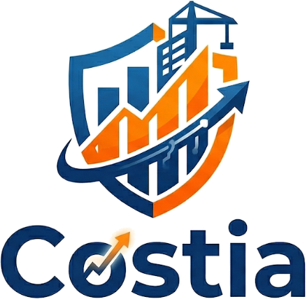
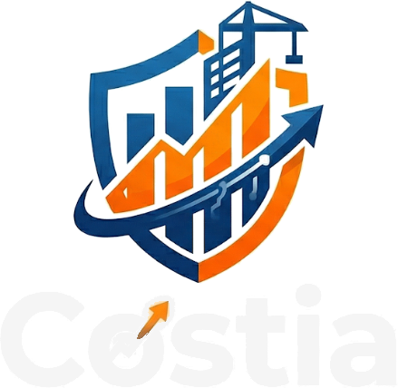
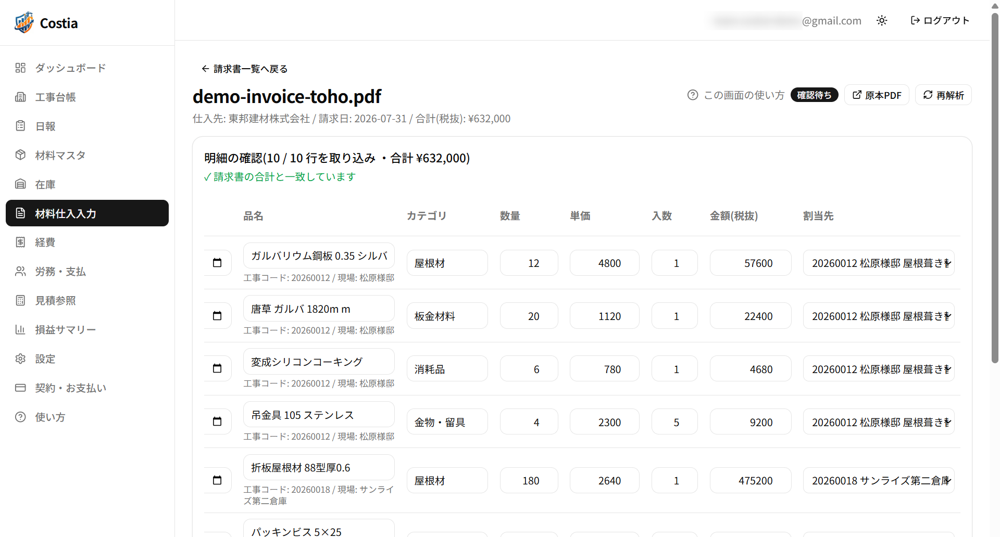
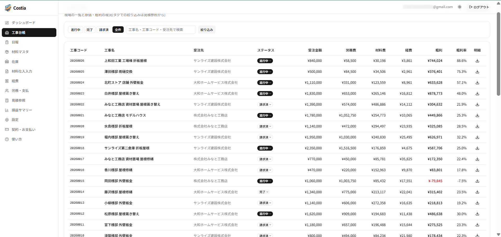
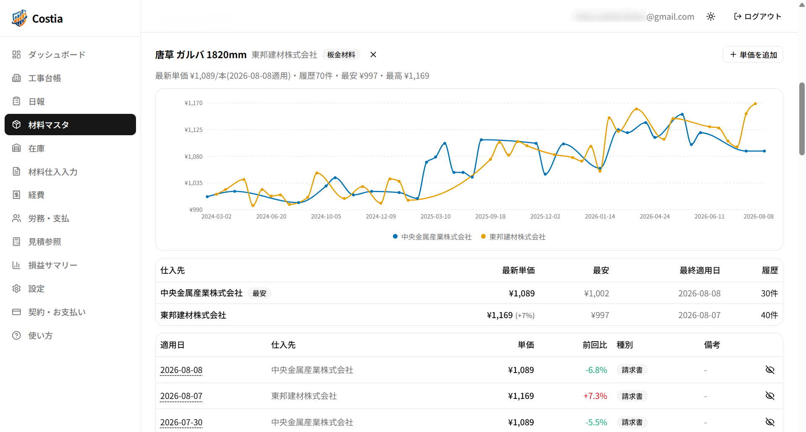

文字を打たないまま、
その工事の粗利が出る。
Costia は建設業のための現場・原価管理システムです。問屋の請求書はPDFを入れるだけ、経費はレシートを撮って送るだけ、 日報は工事と時間を選ぶだけ。作業用グローブをしたままでも、車の中でも入力が終わります。 会社に戻ってパソコンに向かう時間がなくなり、それでいて工事ごとの原価と粗利は毎日積み上がります。
クレジットカードの登録は不要です。お試し期間が終わっても自動で課金されることはありません。
「終わってみないと儲けが分からない」を、なくす。
建設の現場でよく起きる、原価が見えなくなる3つの理由に正面から対応しました。
材料費が現場に紐づかない
仕入れた材料を、どの現場でどれだけ使ったかを記録。使用と同時に原価計上と在庫の減算が行われます。
労務費が後回しになる
職人が入力した日報の作業時間から、設定した単価で労務費を自動計上。日報がそのまま原価になります。
請求書の入力が追いつかない
仕入先の請求書PDFをアップロードすると、AIが明細を読み取り、工事ごとの材料費として計上します。取り込んだ時点で、その現場の粗利が変わります。
実際の画面
サンプルの会社のデータで表示しています。画像を開くと拡大できます。
請求書を入れると、その場で粗利が動く
仕入先から届いた請求書のPDFをアップロードすると、AIが明細を1行ずつ読み取ります。 請求書に書かれた工事コードから、どの現場の材料かまで自動で割り当て、 確定を押した時点で、その現場の材料費と粗利に反映されます。 読み取った合計が請求書と合っているかも、その場で確認できます。

現場ごとの原価と粗利
受注金額に対して、労務費・材料費・経費がいくら乗っているか。 工事が終わってから集計するのではなく、進んでいる最中に確認できます。 赤字になっている現場は赤く表示されるので、手を打つ前に気づけます。

材料の値上がりが数字で残る
取り込んだ請求書から、材料ごとの単価が仕入先別に貯まっていきます。 いつ、どれだけ上がったのかが記録として残るので、 見積もりの見直しや仕入先との価格の話を、勘ではなく数字でできます。

できること
基本プランは1つだけ。以下の機能をすべてお使いいただけます。
- 工事ごとの原価・粗利の集計
- 日報からの労務費計上
- 材料の仕入・使用・在庫管理
- 請求書PDFのAI読み取りと、工事ごとの材料費への計上
- Telegram から現場で経費入力
- 職人向けの日報入力画面
- 全工事の損益集計とグラフ
- 自社データのエクスポート
- 毎日の自動バックアップ(自社の Google Drive へ)
オプション
本体は原価管理に絞り、必要な会社にだけオプションとして提供しています。ご希望の場合はお問い合わせください。
案件連携 提供中
現場ごとの写真・書類・連絡メモを、チャット(Telegram)に送るだけで自動整理。 工事を登録すると現場ごとの話題(タブ)が自動で作られ、そこに送った写真や書類が、 御社自身の Google Drive の現場フォルダに仕分けされて入ります。 いまお使いの Drive のフォルダ構成のまま使えます。
- まとめて送っても操作は1回。10枚まとめて送っても、行き先を聞かれるのは1回だけ。ボタンを押せば全部まとめて同じ現場のフォルダへ入ります。
- 飛び込みの現場も、その場から。まだ登録していない現場でも、現場から「新しい案件を作る」を押して名前を送るだけ。保存先のフォルダまで自動でできます。事務所に電話して先に登録してもらう必要はありません。
- 見積り段階から使えます。受注が決まったら、それまでの写真・書類・連絡メモごと工事に引き継げます。
会計連携 準備中
材料仕入・経費・労務費を期間で集計し、税理士へそのまま渡せる Excel の集計表 (月次科目別・仕入先別・工事別原価・未成工事支出金など)を出力。 会計ソフトへ直接取り込める仕訳インポート用CSVにも対応予定です。
オプションの料金・お申し込みは お問い合わせ ください。
事務所と現場、それぞれの画面
立場によって見える画面を分けているので、職人に余計な操作を覚えてもらう必要がありません。
事務・管理者
現場の登録から、材料の仕入・使用、経費、請求、損益の確認まで。会社全体の数字を1画面で追えます。
職人
スマホで開くのは日報の入力画面だけ。現場と作業時間を選んで送るだけで、労務費として反映されます。
導入の流れ
専用の機材やソフトのインストールは不要です。半日あれば運用を始められます。
無料登録(数分)
会社名とメールアドレスだけで、その日からすべての機能を60日間お試しいただけます。クレジットカードの登録は不要です。
最初の設定(30分ほど)
取引先・職人・単価を登録し、いま動いている工事を工事台帳に入れます。導入の手引きに沿って進めるだけです。
日々の入力へ
請求書PDFの取り込み、職人の日報、経費の入力。その日から現場ごとの原価と粗利が積み上がり始めます。
申し込みから日々の操作までを1冊にまとめた説明書(利用者向け)をお渡しします。職人向けのページは、そのまま職人さんに見せられる短さです。
料金
1社あたりの料金です。人数による追加料金はありません。
Costia 月額プラン
税込 2,750円(消費税10%)
60日間 無料ではじめる- 60日間の無料お試し・カード登録は不要
- お試し後の自動課金なし。手続きをしない限り料金は発生しません
- 職人・事務員が何人増えても、この料金のままです
- お支払いは Stripe によるクレジットカード決済
- 解約はサービス内からいつでも。違約金はかかりません
- 案件連携・会計連携のオプションは別料金(お問い合わせください)
よくある質問
データの取り扱いについて
入力したデータを運営者に見られることはありませんか？
お問い合わせへの対応、障害の調査・復旧、不正利用の調査、法令に基づく要請といった必要な場合を除き、運営者がお客様の業務データを閲覧することはありません。営業や分析の目的で閲覧することは一切ありません。詳しくはプライバシーポリシーをご覧ください。
他の会社に自社のデータが見えることはありませんか？
ありません。データは会社アカウント単位で分離されており、他社の利用者が閲覧することはできない仕組みになっています。
データはどこに保管されますか？
業務データは日本国内(東京リージョン)のデータベースに保管され、通信はすべて暗号化されています。アップロードされた請求書PDFなどのファイルは、会社ごとに分離された保管領域に保存されます。詳しくはプライバシーポリシーをご覧ください。
AIに読み取らせた請求書の内容が、AIの学習に使われることはありませんか？
ありません。請求書PDFの解析には Google の Gemini API(有料版)を利用しており、Google が定めるところにより、送信されたデータが Google の生成AIモデルの学習・改善に利用されることはありません。
クレジットカード情報は安全ですか？
決済は Stripe 社の決済ページで行われ、カード情報を当社が保持することはありません。
入力したデータは持ち出せますか？
はい。エクスポート機能でご自身のデータを取得していただけます。解約前にも実行できます。
サービスや運営に万一のことがあったら、データはどうなりますか？
Google Drive を接続していただくと、全データが毎日自動で御社自身の Google Drive にバックアップされます(人が読める Excel と、復元用のデータの2形式)。請求書PDFなどの原本も御社の Drive に保存される仕組みなので、データが当社の手元にしか無い、という状態にはなりません。エクスポート機能でいつでも全データを持ち出すこともできます。
料金・ご利用について
お試し期間が終わると自動的に課金されますか？
いいえ。お申し込み手続きを行わない限り料金は発生しません。期間終了後はお申し込み画面が表示され、手続きをすると引き続きご利用いただけます。
解約したいときはどうすればいいですか？
サービス内の「契約・お支払い」画面から、いつでもご自身で解約できます。解約後も当該請求期間の末日までご利用いただけます。なお、お支払い済みの料金の返金・日割精算は行っておりません。
AI解析の利用に上限はありますか？
費用が急増しないよう上限を設けていますが、通常のご利用で到達する値ではありません。請求書PDFのAI解析は1社あたり月300回(同一の請求書につき5回まで)、PDFは1ファイルあたり50ページまでです。
スマホでも使えますか？
はい。職人向けの日報入力画面はスマホでの利用を前提に作られています。経費の入力は Telegram からも行えます。
現場の写真も管理できますか？
本体は原価の管理に絞っていますが、オプションの「案件連携」で、チャット(Telegram)の現場ごとの話題に送った写真・書類・連絡メモを、御社自身の Google Drive の現場フォルダへ自動で仕分けできます。まとめて送った写真は1回の操作で振り分けられ、まだ登録していない飛び込みの現場も、現場から名前を送るだけでフォルダごと作れます。写真の実体は御社の Drive に入るので、容量課金や囲い込みはありません。
会計ソフトと連携できますか？
オプションの「会計連携」として準備中です。材料仕入・経費・労務費を期間で集計し、税理士へ渡せる Excel の集計表と、会計ソフトへ取り込める仕訳インポート用CSVを出力します。ご興味があればお問い合わせください。